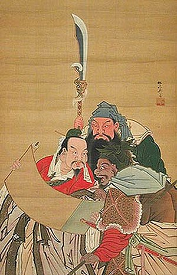

More about Romance of the Three Kingdoms:
The story – part historical and part fictional – romanticises and dramatises the lives of feudal lords and their retainers, who tried to replace the dwindling Han dynasty or restore it.While the novel follows hundreds of characters,
the focus is mainly on the three power blocs that emerged from the remnants of the Han dynasty, and would eventually form the three states of Cao Wei, Shu Han, and Eastern Wu. The novel deals with the plots, personal and military battles, intrigues,and struggles of these states to achieve dominance for almost 100 years. 